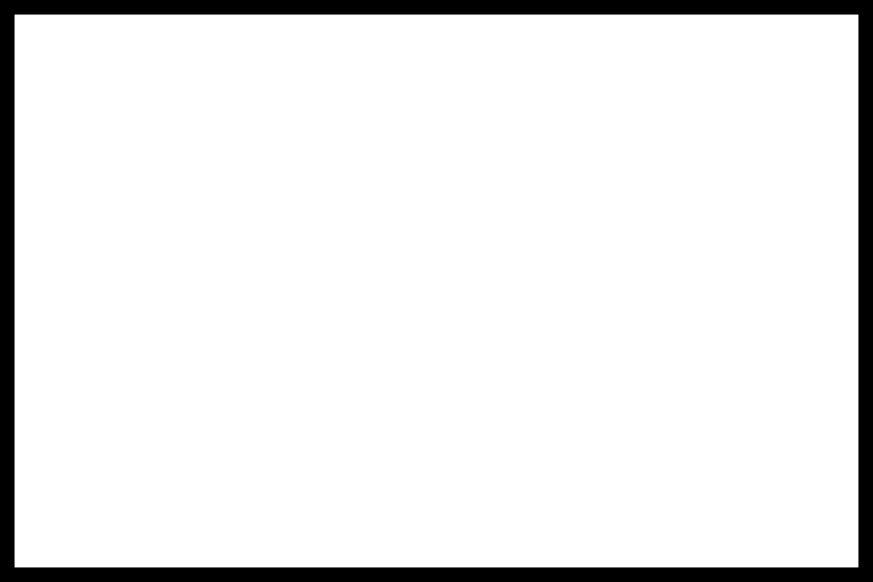

Velkommen
Klik på skærmen for at starte.
Find genstande, løs gåder og overlev.

Helvede
Ritualet gik galt. Du vågner et sted, der ikke længere føles som verden.
Din ven, som du lavede ritualet med, er ikke sig selv længere. Noget har taget over. Noget, der kalder sig Satan.




Gåde
Du døde
Du valgte forkert...


Dæmonen
Du kan ikke løbe længere. Du har båret lyset hele tiden... men tør du bruge det?

Satan
Troede du virkelig, at dørene ville åbne for dig?
Satan
Én dør lader dig slippe fri. Den anden tvinger dig til at møde sandheden. Og foran dig ligger en pistol.
Du slap fri
Du forlader din ven og flygter ud af helvede. Du overlever, men du ved, at du efterlod noget menneskeligt bag dig.
Din ven
Bag døren ser du din ven fanget i Satans krop. Du har ét sidste valg.
Du reddede din ven
Du åbner bogen og læser ordene højt. Satan skriger, lyset bryder frem, og din ven falder sammen — fri.